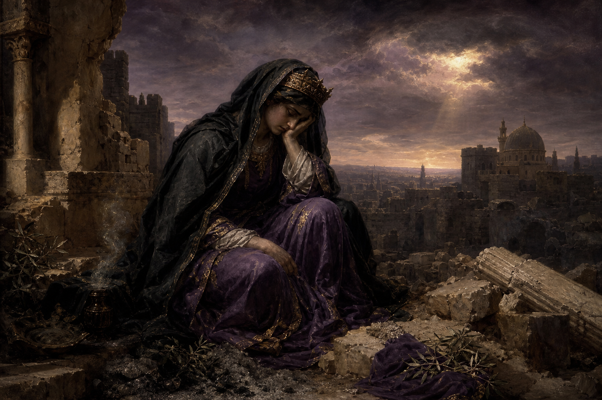

Old Testament · Book 25 of 39
Lamentations
Five funeral poems mourn the fall of Jerusalem, refusing to look away from the grief while still reaching, in the middle of the ashes, for hope.
Lamentations is a carefully crafted acrostic funeral dirge, written in the immediate aftermath of Jerusalem's destruction, that refuses either to minimize the horror or to let go of hope entirely.
It is of the LORD's mercies that we are not consumed, because his compassions fail not. They are new every morning: great is thy faithfulness.
What happens in Lamentations
Each of the first four chapters is an acrostic, moving through the Hebrew alphabet letter by letter, as if grief needs a complete, orderly form to contain it. The poems describe the city of Jerusalem as a widow sitting alone, her people starving under siege, her enemies mocking what remains, and they do not shy away from the famine's most horrific details or the sense that God himself has become an adversary to his own people. Chapter three, at the very center of the book, pivots: in the middle of describing affliction, the writer suddenly remembers God's steadfast love and faithfulness, declaring that his compassions are new every morning, and that it is good to wait quietly for the Lord's salvation. The final chapter returns to communal lament and ends not with resolution but with an open plea for God to restore his people, turn them back to himself, and renew their days — a prayer left hanging, honest that restoration has not yet come.
Why it matters
Lamentations gives permission to grieve without rushing to a tidy conclusion. It models a faith that can hold unbearable loss and persistent hope in the same breath, trusting God's character even when his actions are not yet understood, which is why it has become the Bible's primary language for communal mourning ever since.